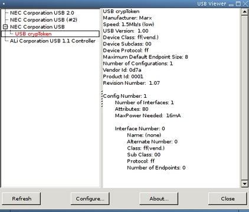

Snooping the USB Data Stream
By Greg Kroah-Hartman on Sun, 2004-08-01 01:00.
SysAdmin
Follow along with the kernel hacker's actual problem-solving process as the quest to add support for a new device begins.
Day 1: I open the box to see a small USB device-no bigger than a quarter-a CD and a note from my editor, "Make this work on Linux!" "Okay", I think, "this should be easy."
I plug the device in to my laptop and run a small program called usbview to learn what the Linux kernel thinks this device is (Figure 2). This device must be calling itself a USB CrypToken, as that is the string contained in the device. Unfortunately, the device name is in red, which means no kernel driver is bound to the device. I either have to write one or find a way to use libusb to talk to the device from user space (see my article "Writing a Real Driver-in User Space", LJ, June 2004, for more information about libusb).

Figure 2. usbview identifies the device by vendor and product ID.
Not content to rely on pretty GUI programs, I poke around in the /proc/bus/usb/devices file to get the raw device information. The section that describes this device looks like this: Garrick, use small font below.
T: Bus=01 Lev=02 Prnt=03 Port=02 Cnt=01 Dev#= 4 Spd=1.5 MxCh= 0 D: Ver= 1.00 Cls=ff(vend.) Sub=00 Prot=ff MxPS= 8 #Cfgs= 1 P: Vendor=0d7a ProdID=0001 Rev= 1.07 S: Manufacturer=Marx S: Product=USB crypToken C:* #Ifs= 1 Cfg#= 1 Atr=80 MxPwr= 16mA I: If#= 0 Alt= 0 #EPs= 0 Cls=ff(vend.) Sub=00 Prot=ff Driver=(none)
Curious to know whether any other Linux user has tried this device, I consult the Linux USB Working Devices List (see the on-line Resources section). Plugging the vendor ID of 0d7a in to the Quick Search field results in no records found. Perhaps this project will take more work than I thought.
Day 2: The CD, where did I toss it? I locate it and put it in the drive and, look, there's a file called linux.txt on it. Wow, a vendor that acknowledges that Linux might be a viable operating system to support-things sure have changed over the years. After poking around further and reading the documentation on the CD, I realize the device is a small crypto token that can be used to do all sorts of fun things, such as read a unique serial number from the device (each device is different), encrypt data through the device with a 128-bit key stored only in the device and save data on the device in a secure storage area.
On the CD is a shared library that can be used to talk to the USB device to allow a program to access the functions provided by this device. Also present is a small test program that shows how the different library functions work. The library uses libusb to talk directly to the device from user space, which means that a kernel driver is not necessary for this device. The library's license does not allow it to be used within a program that would be licensed under the GPL, however, which is unfortunate for many potential uses. I need to find some way to allow GPL programs to talk to the USB device.
Day 3: While rummaging through my old collection of USB patches, I dig up a reference to a developer who modified the kernel usbfs core code to log all data that flows through it. This patch would allow anyone to read the raw USB data for any program that uses usbfs to talk to a USB device. Because libusb uses usbfs to communicate with USB devices, this might offer a way to reverse engineer this device. Unfortunately, the patch wasn't present with the reference, and no amount of digging on the Internet turned up any real code.
Day 4: As there is no available patch to do what I want to do, I might as well do it myself. So, off to grab the latest 2.6 kernel source tree and dive in.
The files inode.c, devices.c and devio.c in the drivers/usb/core/ directory of the kernel source tree implement the usbfs filesystem. The main filesystem code is in the inode.c file. It contains all of the various VFS code that creates a virtual filesystem and the virtual files within it. The file devices.c handles the creation and reading of the /proc/bus/usb/devices file. This file shows all USB devices and information for those devices in the system at the present time.
The file devio.c controls the raw access of USB devices through the usbfs filesystem. For a user-space program to talk to a USB device through usbfs, it needs to use the ioctl() command on a file that represents the USB device. All of the different ioctl messages that can be sent to the USB devices through usbfs are detailed in the include/linux/usbdevfs.h file.
So, in order to log all accesses to all devices through usbfs, the devio.c file should be modified. Digging into the file, the function usbdev_ioctl looked like the proper place to do this logging. It is called for every ioctl call to a usbfs file. Within that function is a big switch statement that calls the proper functions, depending on the different ioctl command. That is the perfect place to log what kind of command was sent to the device. So, I added a simple printk() call to each case statement, causing them to look like this: Garrick, please kern the double underscores in the code below.
...
case USBDEVFS_CLAIMINTERFACE:
printk("CLAIMINTERFACE\n);
ret = proc_claiminterface(ps, (void __user *)arg);
break;
case USBDEVFS_RELEASEINTERFACE:
printk("RELEASEINTERFACE\n");
ret = proc_releaseinterface(ps, (void __user *)arg);
break;
...
A simple compile, install and module load later confirmed that every usbfs access is now logged to the kernel log, which can be seen by running the dmesg program. I determined that running the lsusb program as lsusb -v produced a lot of usbfs accesses as the program retrieves all of the raw USB configuration data from all devices.
Day 5: Now that the different kinds of usbfs accesses can be noticed easily, it is time to log the data these accesses generate. In looking at the description of the device in the /proc/bus/usb/devices file, it appears that I care only about the accesses to the control endpoint, because there are no endpoints assigned to this device.
Digging further into the devio.c file, I determine that the proc_control() function handles all control messages. There, the code determines whether the request is a read or write control message with the code:
if (ctrl.bRequestType & 0x80) {
The USB bRequestType variable is a bitfield, and the uppermost bit determines the direction of the request. So, in the read section of this if statement I add the lines:
printk("control read: "
"bRequest=%02x bRrequestType=%02x "
"wValue=%04x wIndex=%04x\n",
ctrl.bRequest, ctrl.bRequestType,
ctrl.wValue, ctrl.wIndex);
to log the control request information. After the read has completed, I add the following lines to log the actual data read from the device:
printk("control read: data ");
for (j = 0; j < ctrl.wLength; ++j)
printk("%02x ", ctrl.data[j]);
printk("\n");
After doing much the same modification to the write section of the if statement, I build, reload the usbcore modules and verify that I now can log all control messages to and from the device. The messages returned are: Garrick, use small font below.
CONTROL control read: bRequest=06 bRrequestType=80 wValue=0300 wIndex=0000 control read: data 00 00 61 63
Day 6: Looking at the modifications I have made to the kernel code, I think this work might be something other users might like to have. So, it is time to clean up the code to a state that the USB maintainer might accept for the main kernel source tree.
First, I recognized that the calls to printk() are incorrect. All printk() calls must be accompanied by a proper logging level. These logging levels are added to printk calls by pre-appending the proper KERN_ values to the message. The file include/linux/kernel.h contains the following valid values that must be used:
#define KERN_EMERG "<0>" /* system is unusable */ #define KERN_ALERT "<1>" /* action must be taken immediately */ #define KERN_CRIT "<2>" /* critical conditions */ #define KERN_ERR "<3>" /* error conditions */ #define KERN_WARNING "<4>" /* warning conditions */ #define KERN_NOTICE "<5>" /* normal but significant condition */ #define KERN_INFO "<6>" /* informational */ #define KERN_DEBUG "<7>" /* debug-level messages */
So, I change the printk calls in the usbfs_ioctl() function from:
printk("CLAIMINTERFACE\n);
Now the kernel janitors should not complain about improper printk() usage.
In looking further at the logging messages, however, it is hard to determine for what exact device the message is being logged. More information needs to be added to the printk() calls. Luckily, some macros already in the include/linux/device.h file can help us. They are the dev_printk() macro and its helper macros, dev_dbg(), dev_warn(), dev_info() and dev_err(). These macros all need an additional pointer to a struct device variable, which allows them to print out the unique device ID for the message. So I change the printk() calls again to look like this:
dev_info(&dev->dev, "CLAIMINTERFACE\n");
Then the control message printk() calls are changed to:
dev_info(&dev->dev, "control read: "
"bRequest=%02x bRrequestType=%02x "
"wValue=%04x wIndex=%04x\n",
ctrl.bRequest, ctrl.bRequestType,
ctrl.wValue, ctrl.wIndex);
dev_info(&dev->dev, "control read: data ");
for (j = 0; j < ctrl.wLength; ++j)
printk("%02x ", ctrl.data[j]);
printk("\n");
The printk calls that dump the data do not need to be changed, as they still are printing on the same line as the call to dev_info().
Now the log messages are much more informative, looking like the following: Garrick, use very small font below.
usb 1-1: CONTROL usb 1-1: control read: bRequest=06 bRrequestType=80 wValue=0300 wIndex=0000 usb 1-1: control read: data 00 00 61 63
I can determine exactly what USB device is being talked to, which helps me weed out the messages for devices I do not care about.
Day 7: Oops, I now realize that if I expect this kernel change to be accepted by the community, I had better not always generate these messages. Otherwise, everyone would have their system logs overflowing with messages they do not care about. How to log messages only when asked?
I first look into making a new kernel build configuration option. A simple modification of the drivers/usb/core/Kconfig file adding a new option is simple, but in examining the required code changes, I soon realize that wrapping all of the new logging statements in a #ifdef CONFIG_USBFS_LOGGING statement would make the USB maintainer reject my kernel patch. #ifdef is not generally allowed within kernel code, as it cuts down on readability and makes maintaining the code over time almost impossible.
Instead, I look at making an option that can be changed at runtime. I add the following lines of code to the devio.c file: Garrick, use small font below.
static int usbfs_snoop = 0; module_param (usbfs_snoop, bool, S_IRUGO | S_IWUSR); MODULE_PARM_DESC (usbfs_snoop, "true to log all usbfs traffic");
This adds a new module parameter to the main usbcore module called usbfs_snoop. This can be seen after building the code by running the modinfo program:
$ modinfo usbcore license: GPL parm: blinkenlights:true to cycle leds on hubs parm: usbfs_snoop:true to log all usbfs traffic
By loading the module with the following line:
modprobe usbcore usbfs_snoop=1
the option can be enabled by the user.
I used the definition module_param() instead of the old-style MODULE_PARM(), as this is the proper way to describe module parameters in the 2.6 kernel. The main difference is this definition has a third parameter. This third parameter, if set to something besides 0, causes the parameter to show up in sysfs and allows a user to query and modify the option while the module is loaded. With this code included, the usbcore module's directory in sysfs looks like: Garrick, use small font below.
$ ls -l /sys/module/usbcore/ -r--r--r-- 1 root root 4096 May 13 15:33 blinkenlights -r--r--r-- 1 root root 4096 May 13 15:33 refcnt -rw-r--r-- 1 root root 4096 May 13 15:33 usbfs_snoop
The module now can be loaded as normal:
modprobe usbcore
When I decide to turn on logging I simply do:
echo 1 > /sys/module/usbcore/usbfs_snoop
and the kernel variable usbfs_snoop in the devio.c file is changed on the fly.
Now that I can determine whether the user wants to print out snooping messages, I need to modify the dev_info() calls again. I create the following macro to do this:
#define snoop(dev, format, arg...) \
do { \
if (usbfs_snoop) \
dev_info( dev , format , ## arg); \
} while (0)
This macro tests the value of the usbfs_snoop variable, and if true, the dev_info() line is called. The macro is wrapped in a do { } while (0) statement to allow it to be used in any kind of code without having to worry about any side effects. All kernel macros containing more than one line of code are written in this way for this reason. For more details about this, read the kernel newbies FAQ (see Resources).
I next change all previously added calls to dev_info() to a call to snoop(), causing the code to look like:
snoop(&dev->dev, "control read: "
"bRequest=%02x bRrequestType=%02x "
"wValue=%04x wIndex=%04x\n",
ctrl.bRequest, ctrl.bRequestType,
ctrl.wValue, ctrl.wIndex);
But where the data is printed out, the snoop() macro does not work properly. I need to check the value of the usbfs_snoop variable directly, wrapping the code in an if statement:
if (usbfs_snoop) {
dev_info(&dev->dev, "control read: data ");
for (j = 0; j < ctrl.wLength; ++j)
printk("%02x ", ctrl.data[j]);
printk("\n");
}
I'm happy, and hopefully the USB maintainer also will be happy with the changes. I read how to generate a proper kernel patch by consulting the file Documentation/SubmittingPatches, generate a diff file and e-mail it off.
We now have a way to snoop all usbfs traffic, which can help us reverse engineer any device that uses libusb to communicate with a USB device. It also allows us to snoop any USB accesses from a guest OS running in a VMware session, allowing the possibility to reverse engineer Microsoft Windows USB drivers much more easily. But all of that has to wait until the next column.
Resources for this article: www.linuxjournal.com/article/7605.
Greg Kroah-Hartman currently is the Linux kernel maintainer for a variety of different driver subsystems. He works for IBM, doing Linux kernel-related things, and can be reached at greg@kroah.com. 7582aa.tif


{kind=link}
{kind=link}